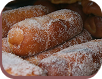
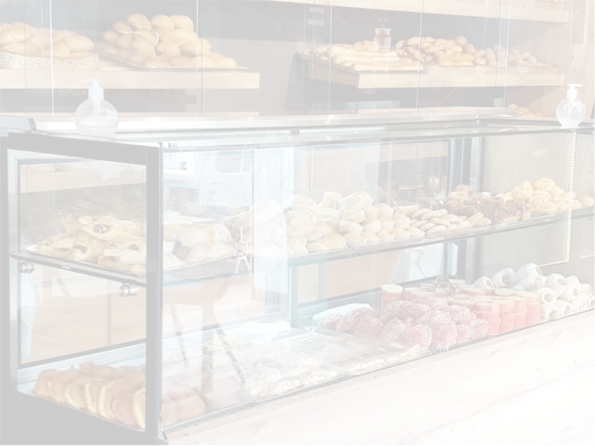
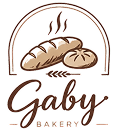
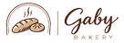
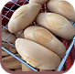
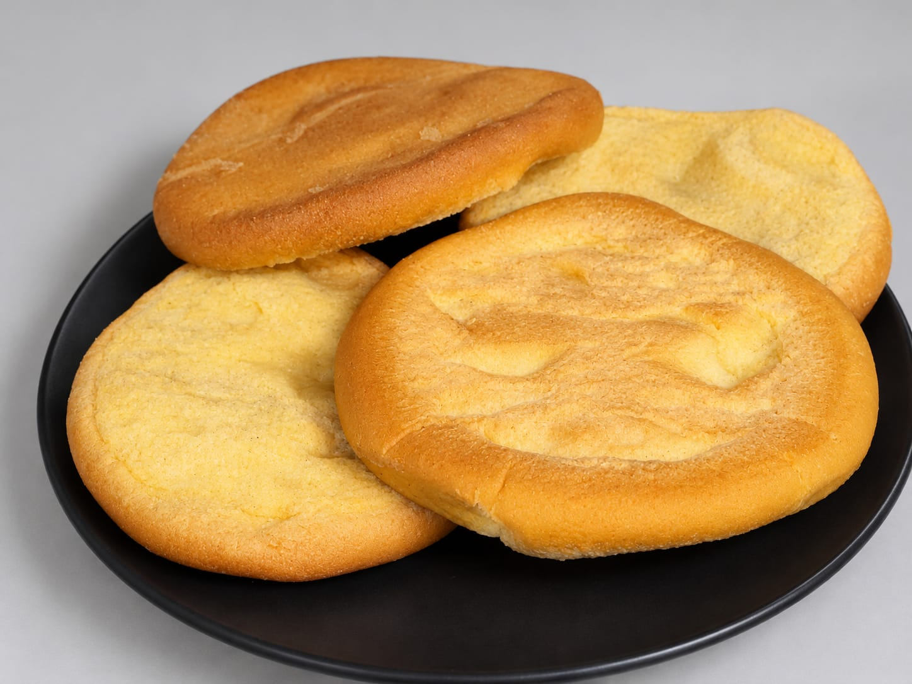

Churros
Texto para lo que quieras ampliar sobre el punto principal.



En nuestra panadería elaboramos productos frescos y deliciosos con ingredientes de calidad y mucho cariño. Puedes encontrar panes recién horneados, pasteles, postres y diferentes opciones para disfrutar en cualquier momento del día.


Texto para lo que quieras ampliar sobre el punto principal.

Texto para lo que quieras agregar al subtítulo.

Texto para algo más que quieras compartir.
Para realizar tu pedido al por mayor puedes contactarnos por medio de nuestros números de Whatsapp los cuales son:
El cual te respondemos por llamada y mensaje
en el que te respondemos por mensaje únicamente.
Lamentamos informar que no manejamos pedidos al por menor ya que nuestra panadería se centra en la distribución hacia clientes que se encargan de llevar nuestro pan de alta calidad a otras panaderías abiertas al publico
Nuestros comienzos fueron en 1998, en el barrio Marabel siendo único propietario Alexander Vergel junto dos empleados y con mucha mas variedad de pan, durando asi 3 años abierta al publico vendiendo al por menor con buenas ventas.
Luego en el año 2001, junto con los dos propietarios actuales Alexander y Yurley Jácome, se tuvo que cerro la panadería al publico y se comenzó a vender tienda a tienda, ósea se manejaba de manera que el pan se producía en nuestro hogar y los propietarios se encargaban de repartirlos por muchas tiendas de Ocaña, durando con esta modalidad hasta el 2011.
Posteriormente en el barrio Gustavo Alayon se volvió a abrir al publico dejando atrás la modalidad de repartir tienda a tienda, La panadería volvió a prosperar de esta manera llegando a trasladarnos en el 2016 a la Ciudadela deportiva siguiendo esta misma modalidad, hasta que, en el año 2023, las ventas comenzaron a bajar drásticamente ya que el publico prefería el pan mas económico sin prestar atención en la calidad, llevándonos a cerrar la panadería al publico definitivamente.
En la actualidad se maneja esta modalidad con clientes que hacen pedido al por mayor para ellos mismos trasladar el pan hacia las afueras de Ocaña, teniendo también una variedad mas limitada de pan la cual se encuentra en nuestra pagina.